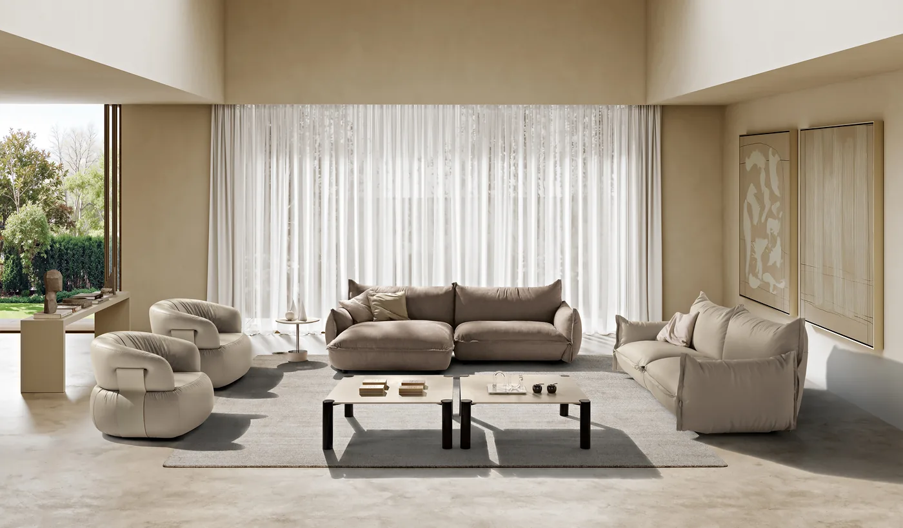

Salon
Canapés d’angle.
En angle ou avec chaise longue, à gauche ou à droite. Chaque fiche donne les dimensions des compositions proposées par le fabricant : nous dessinons avec vous celle qui convient à votre pièce.
La sélection
Deux manières d’occuper l’angle.
-

Pour s’y installer à plusieurs
L’angle qui se règle.
Chaise longue à gauche ou à droite, appuie-têtes réglables, relax électrique en option : ces angles se composent place par place, selon la pièce et selon ceux qui s’y assoient.
-

Pour une pièce contemporaine
L’angle aux lignes basses.
Des formes souples et une assise profonde pour l’un, des dossiers qui avancent ou reculent pour l’autre : deux façons de donner du caractère à un séjour.


Vos questions
Avant de choisir.
Comment savoir si un canapé d’angle entre dans ma pièce ?
Chaque fiche indique la largeur et la profondeur des compositions d’angle. Apportez les dimensions de votre pièce, ou demandez une visite chez vous avec le formulaire.
Un canapé d’angle peut-il avoir un relax ?
Oui, plusieurs modèles de cette page existent en angle avec un ou deux relax électriques. C’est précisé sur leur fiche.
Voir aussi
D’autres façons de chercher.
Venez essayer nos salons.
Notre équipe vous aide à choisir la composition, le revêtement et la version qui vous conviennent. Parking facile d’accès, avec ou sans rendez-vous.
- Lundi
- 13h30 – 18h30
- Mardi au samedi
- 10h30 – 18h30
- Dimanche
- Fermé
- Téléphone
- 064 46 07 72
- Livraison
- Par nos soins, dans le Hainaut (Binche, La Louvière, Mons, Charleroi…) et la province de Namur
Pour un projet plus loin, ailleurs en Belgique ou à l’étranger : parlons-en.